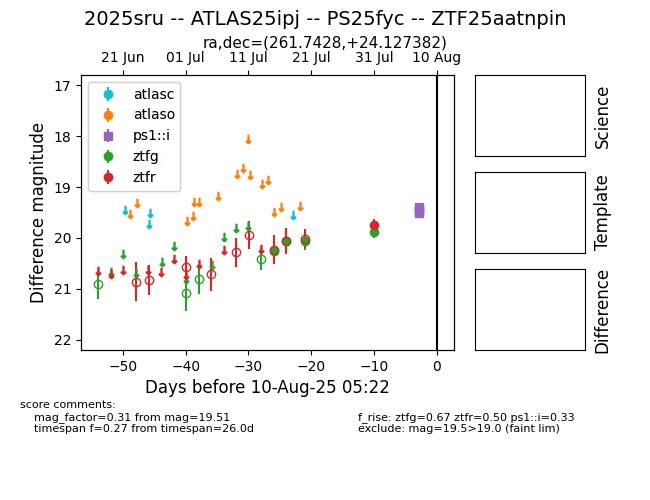

Target 2025sru at 2025-08-06 14:14, see:
FINK: fink-portal.org/2025sru
Lasair: lasair-ztf.lsst.ac.uk/objects/2025sru
ALeRCE: alerce.online/object/2025sru
TNS: wis-tns.org/object/2025sru
YSE: ziggy.ucolick.org/yse/transient_detail/2025sru
alt names
ZTF25aatnpin (ztf,fink)
2025sru (tns,yse)
ATLAS25ipj (atlas)
PS25fyc (panstarrs)
coordinates:
equatorial (ra, dec) = (261.7428,+24.12738)
galactic (l, b) = (47.0336,+28.62106)
photometry
last ztfg=19.88, ztfr=19.74
4 ztfg, 1 ztfr detections
